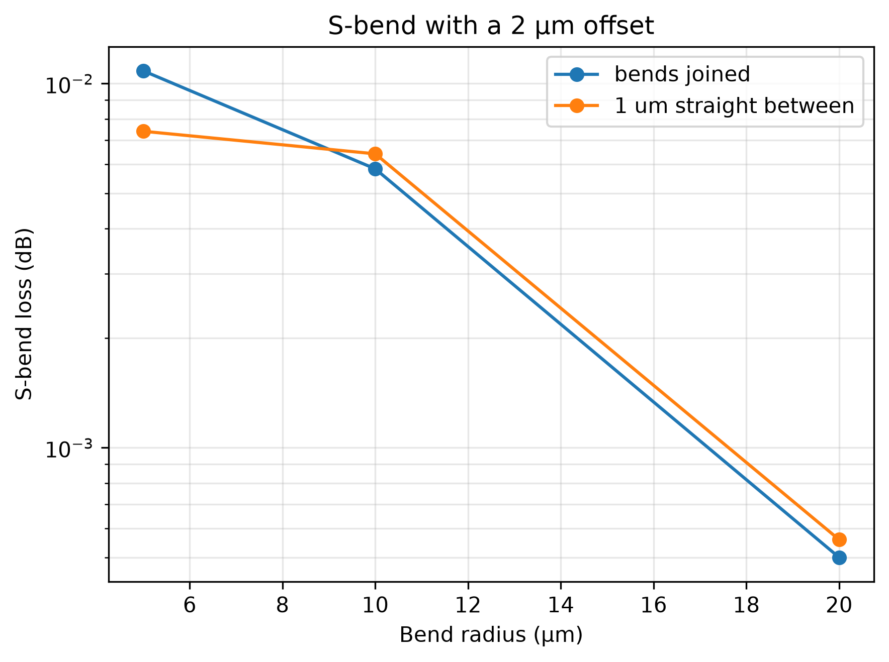
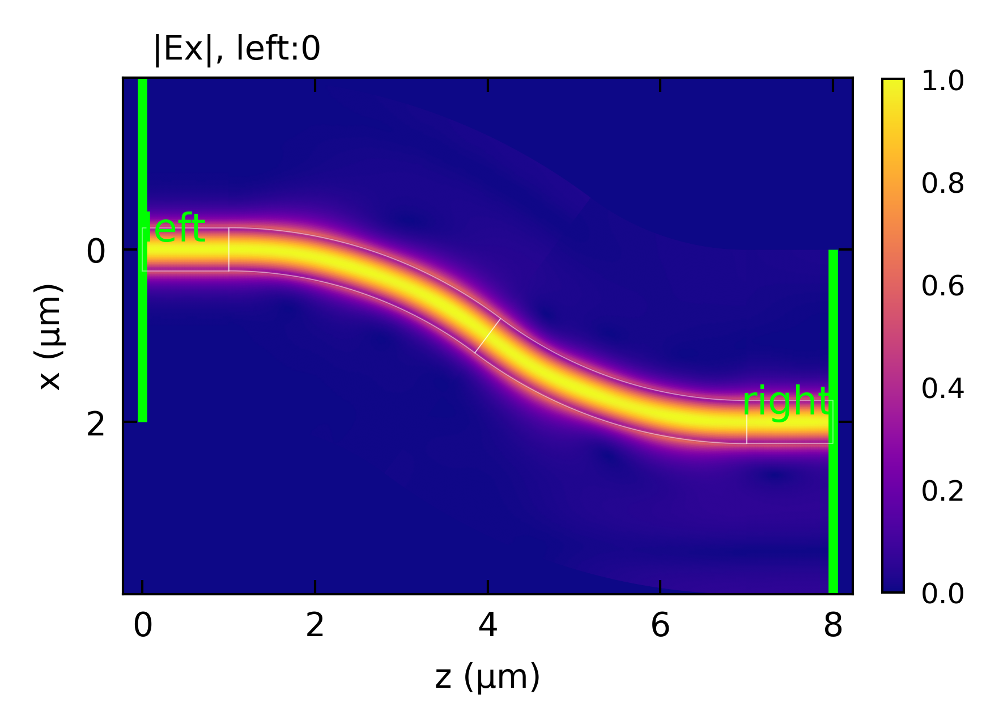

EME: S-Bend
An S-bend moves a waveguide sideways. Here a 500 x 220 nm Si wire in SiO2 at 1550 nm is shifted by 2 um with two bend_sections of the same radius and opposite sweep_angle. The S-bend is solved at several radii, with the two bends joined and with a short straight between them.
Highlighted features: bend_section with a signed sweep_angle, and plot(view='layout') drawing the field where the layout places each section.
A bend pushes its mode toward the outside of the curve, so the loss comes from the mode mismatch at each junction, and at the joint between the two bends the mode has to move from one side of the guide to the other. The loss falls quickly as the radius grows. At the tightest radius a short straight between the bends lowers the loss noticeably, since the mode passes through a centered straight mode on its way across. At larger radii the mode barely moves, and the straight makes little difference.
The windows have metal walls and no PML, so the power a junction scatters stays in the window’s modes and the example measures the junction loss, not radiation. A bend tight enough to radiate needs a PML on its outer wall, as in Bend Mode Solvers.
This code example is licensed under the BSD 3-Clause License.
import sys
import time
import numpy as np
import emodeconnection as emc
from matplotlib import pyplot as plt
## An S-bend that shifts a Si wire sideways by 2 um, built from two circular
## bends of opposite curvature. Its loss is compared for three radii, and with
## and without a short straight between the two bends.
## Set simulation parameters
wavelength = 1550 # [nm] wavelength
dx, dy = 20, 20 # [nm] resolution
w_core = 500 # [nm] waveguide core width
h_core = 220 # [nm] waveguide core height
h_clad = 1090 # [nm] cladding below and above the core
window_width = 4000 # [nm]
window_height = h_core + 2*h_clad # [nm]
num_modes = 32 # [-] number of modes
shift = 2000 # [nm] lateral offset of the S-bend
radii = [20000, 10000, 5000] # [nm] bend radii, the last one is plotted
lead = 1000 # [nm] straight input and output
straight_lengths = [0, 1000] # [nm] straight between the two bends, 0 for none
def solve_sbends(straight_length):
"""Solve the S-bend at every radius, with `straight_length` between its bends."""
name = 'sbend' if straight_length == 0 else 'sbend_straight'
em = emc.EMode(emode_cmd=sys.argv[1:], simulation_name=name)
em.settings(
wavelength=wavelength, x_resolution=dx, y_resolution=dy,
window_width=window_width, window_height=window_height,
num_modes=num_modes, boundary_condition='00', background_material='SiO2')
em.shape(name='BOX', material='SiO2', height=h_clad)
em.shape(name='core', material='Si', height=h_core, etch_depth=h_core, mask=w_core)
em.label_profile(name='wg')
rows = []
for radius in radii:
## Two arcs of opposite sweep shift the guide by `shift`
## over 2*R*sin(angle) along z, plus the straight between them
angle = np.arccos(1 - shift / (2 * radius)) # [rad]
em.straight_section(name='input', profile='wg', length=lead)
em.bend_section(name='bend_1', profile='wg', radius=radius, sweep_angle=angle)
if straight_length > 0:
em.straight_section(name='middle', profile='wg', length=straight_length)
em.bend_section(name='bend_2', profile='wg', radius=radius, sweep_angle=-angle)
em.straight_section(name='output', profile='wg', length=lead)
start = time.time()
S = em.EME()
elapsed = time.time() - start
## Transmission of the fundamental mode, and the power that leaves
## through every mode of both ports (each mode weighted by its power)
T = np.abs(S.block('right', 'left')[0, 0]) ** 2
launched = S.block(['left', 'right'], 'left')[:, 0]
balance = np.sum(S.mode_power * np.abs(launched) ** 2) / S.mode_power[0]
z_length = 2 * radius * np.sin(angle) + straight_length
rows.append((radius, angle, z_length, T, balance, elapsed))
if straight_length == 0:
## The field of the tightest S-bend, drawn where the layout places it
em.plot(component='Ex', plot_function='abs', plane='z-x', view='layout',
file_name='sbend_field', file_type='png')
em.close()
return rows
results = {s: solve_sbends(s) for s in straight_lengths}
## Print the loss of every S-bend
print(f'\n{"between":>8s}{"R (um)":>8s}{"angle (rad)":>13s}{"z length (um)":>15s}'
f'{"T":>10s}{"loss (dB)":>11s}{"power out":>11s}{"time (s)":>10s}')
for straight_length, rows in results.items():
for radius, angle, z_length, T, balance, elapsed in rows:
print(f'{straight_length * 1e-3:>5.1f} um{radius * 1e-3:>8.1f}{angle:>13.4f}'
f'{z_length * 1e-3:>15.3f}{T:>10.6f}{-10 * np.log10(T):>11.4f}'
f'{balance:>11.5f}{elapsed:>10.1f}')
## Plot the loss against the bend radius
plt.figure(figsize=(6, 4.5))
for straight_length, rows in results.items():
label = 'bends joined' if straight_length == 0 else f'{straight_length * 1e-3:.0f} um straight between'
plt.semilogy([r[0] * 1e-3 for r in rows], [-10 * np.log10(r[3]) for r in rows],
marker='o', label=label)
plt.xlabel('Bend radius (μm)')
plt.ylabel('S-bend loss (dB)')
plt.title(f'S-bend with a {shift * 1e-3:.0f} μm offset')
plt.legend()
plt.grid(True, which='both', alpha=0.3)
plt.tight_layout()
plt.savefig('sbend_loss_vs_radius.png', dpi=300, bbox_inches='tight')
Console output:
EMode3D 1.0.7 - email
Solving S-matrices...
Solving section: input... completed in 0.0 sec
Solving section: bend_1... completed in 6.1 sec
Solving section: bend_2... completed in 6.1 sec
Solving section: output... completed in 0.0 sec
completed in 12.7 sec
Solving S-matrices...
Solving section: input... completed in 0.0 sec
Solving section: bend_1... completed in 6.0 sec
Solving section: bend_2... completed in 6.0 sec
Solving section: output... completed in 0.0 sec
completed in 12.6 sec
Solving S-matrices...
Solving section: input... completed in 0.0 sec
Solving section: bend_1... completed in 7.7 sec
Solving section: bend_2... completed in 7.7 sec
Solving section: output... completed in 0.0 sec
completed in 16.0 sec
Exited EMode
EMode3D 1.0.7 - email
Solving S-matrices...
Solving section: input... completed in 0.0 sec
Solving section: bend_1... completed in 6.3 sec
Solving section: middle... completed in 0.0 sec
Solving section: bend_2... completed in 6.2 sec
Solving section: output... completed in 0.0 sec
completed in 13.0 sec
Solving S-matrices...
Solving section: input... completed in 0.0 sec
Solving section: bend_1... completed in 6.1 sec
Solving section: middle... completed in 0.0 sec
Solving section: bend_2... completed in 6.1 sec
Solving section: output... completed in 0.0 sec
completed in 12.8 sec
Solving S-matrices...
Solving section: input... completed in 0.0 sec
Solving section: bend_1... completed in 7.7 sec
Solving section: middle... completed in 0.0 sec
Solving section: bend_2... completed in 7.7 sec
Solving section: output... completed in 0.0 sec
completed in 16.0 sec
Exited EMode
between R (um) angle (rad) z length (um) T loss (dB) power out time (s)
0.0 um 20.0 0.3176 12.490 0.999885 0.0005 1.00000 21.8
0.0 um 10.0 0.4510 8.718 0.998658 0.0058 0.99999 16.7
0.0 um 5.0 0.6435 6.000 0.997509 0.0108 0.99979 20.2
1.0 um 20.0 0.3176 13.490 0.999871 0.0006 1.00000 22.8
1.0 um 10.0 0.4510 9.718 0.998525 0.0064 0.99999 17.5
1.0 um 5.0 0.6435 7.000 0.998299 0.0074 0.99979 20.8
Figures:

